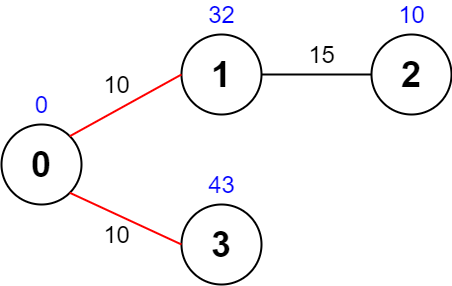
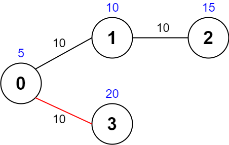
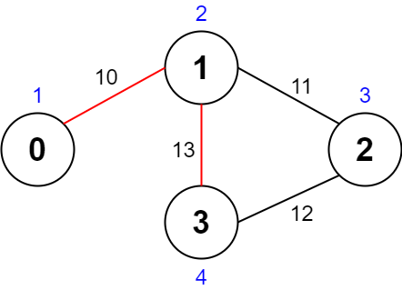

| Category | Difficulty | Likes | Dislikes |
|---|---|---|---|
| Algorithms | Hard | 711 | 53 |
array | backtracking | graph
doordash | apple | sap
There is an undirected graph with n nodes numbered from 0 to n - 1 (inclusive). You are given a 0-indexed integer array values where values[i] is the value of the ith node. You are also given a 0-indexed 2D integer array edges, where each edges[j] = [uj, vj, timej] indicates that there is an undirected edge between the nodes uj and vj, and it takes timej seconds to travel between the two nodes. Finally, you are given an integer maxTime.
A valid path in the graph is any path that starts at node 0, ends at node 0, and takes at most maxTime seconds to complete. You may visit the same node multiple times. The quality of a valid path is the sum of the values of the unique nodes visited in the path (each node's value is added at most once to the sum).
Return the maximum quality of a valid path.
Note: There are at most four edges connected to each node.
Example 1:

Input: values = [0,32,10,43], edges = [[0,1,10],[1,2,15],[0,3,10]], maxTime = 49
Output: 75
Explanation:
One possible path is 0 -> 1 -> 0 -> 3 -> 0. The total time taken is 10 + 10 + 10 + 10 = 40 <= 49.
The nodes visited are 0, 1, and 3, giving a maximal path quality of 0 + 32 + 43 = 75.Example 2:

Input: values = [5,10,15,20], edges = [[0,1,10],[1,2,10],[0,3,10]], maxTime = 30
Output: 25
Explanation:
One possible path is 0 -> 3 -> 0. The total time taken is 10 + 10 = 20 <= 30.
The nodes visited are 0 and 3, giving a maximal path quality of 5 + 20 = 25.Example 3:

Input: values = [1,2,3,4], edges = [[0,1,10],[1,2,11],[2,3,12],[1,3,13]], maxTime = 50
Output: 7
Explanation:
One possible path is 0 -> 1 -> 3 -> 1 -> 0. The total time taken is 10 + 13 + 13 + 10 = 46 <= 50.
The nodes visited are 0, 1, and 3, giving a maximal path quality of 1 + 2 + 4 = 7.
Constraints:
n == values.length1 <= n <= 10000 <= values[i] <= 1080 <= edges.length <= 2000edges[j].length == 3 0 <= uj < vj <= n - 110 <= timej, maxTime <= 100[uj, vj] are unique.